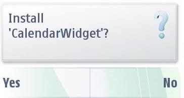
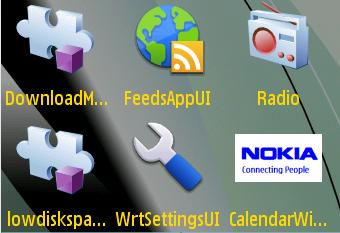
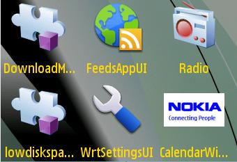
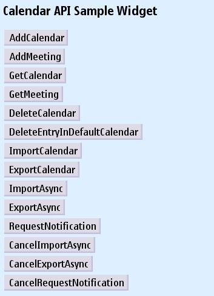
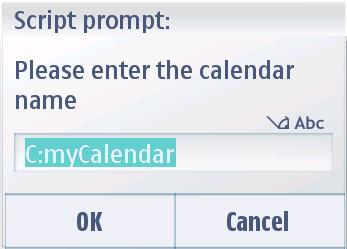
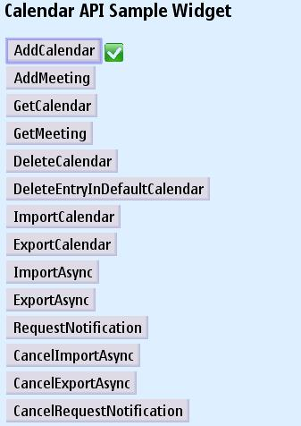
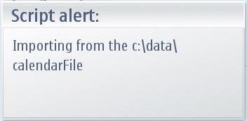
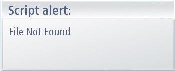

Calendar Service API - Example Widget Documentation
About this document
This document describes the calendar service API Example Widget application for Nokia Symbian^3 SDK .
Read this document if you are a web developer, testing professional, or the product manager working on this product.
About this Product
Widgets are lightweight Web applications developed using the same well-known standards-based Web technologies – AJAX, CSS, HTML and JavaScript – used to
create Web pages. Developers can use it as a reference and testers can use it to test the relevant functionality. widget is intended for Nokia Symbian^3 SDK . Developers should be able to develop professional applications.
Product intent
Example Widget Application is designed to run on Nokia Symbian^3 SDK. It will be designed such that a developer takes it as a reference to create useful applications for any functionality supported on SDK. It will be designed to let the testers to test the functionality
Product limitations
Example widget is not intended to give full featured implementation. This example will implement the WRT 1.0 APIs. It runs a javascript with errors and shows the error either on console or log to a file depending on the option set in browser
Specification
The example widget uses the WRT 1.0 API.
The Web Runtime (WRT) environment supports the following Internet technology standards:
HTML 4.01
The basic HTML standards are supported.
XHTML 1.0
The basic XHTML standards are supported.
CSS Level 2 revision 1 (CSS 2.1)
JavaScript 1.5 (ECMA-262 3rd Edition)
The standard JavaScript features are supported. The WRT environment also provides some additional features that are mobile device specific.
The following additional JavaScript features are supported in the WRT environment:
- Utilizing the underlying user input features of the mobile device to interact with the user
- Self-updating widgets
- UI navigation using either a cursor or tabs
- Rotating the screen: portrait and landscape orientation
- Launching Symbian mobile applications
- Localization framework with automatic detection of the device language settings
- Getting information on physical device functionality and controlling such features.
Example Description
The calendar service API
Sample widget demonstrates the Calendar API support given by the SDK. The
widget opens up with some options with following USE CASES.
Use Cases
- AddCalendar
- AddMeeting
- GetCalendar
- GetMeeting
- DeleteCalendar
- DeleteEntryIndefaultCalendar
- ImportCalendar
- ExportCalendar
- ImportAsync
- ExportAsync
- RequestNotification
- CancelImportAsync
- CancelExportAsync
- CancelRequestNotification
Installing and Running the Widget
- Use
the file - Open option to open the widget under
<Installed_SDK_Dir>\examples\widget\CalendarWidget.wgz

- The SDK recognises and installs the widget. Run the widget from the
installations folder.
 

- Start the Widget from the installed folder i.e.,
Menu >> Application.
- Once the widget is started we get to
see the following options.

- Clicking on the
"AddCalendar" button will add a dummy calendar entry to the
widget.The added calendar entry can be viewed by clicking on the
"GetCalendar" option.
 
- Use the option "DeleteCalendar" to
delete any entry previously added. To make sure weather the entry has been
deleted or not we can verify anytime by using "GetCalendar"
option.
- We can even import calendar from a text file. Just place
a txt file by name "calendarFile.txt "in the path
"Installed_SDK_Dir\epoc32\winscw\c\Data" . If the file is not
present then a Alert message is shown on the screen as displayed.

- The
same way we can export a calender entry by clicking on
"ExportCalendar" button. A text file by the name
"calendarFile" will be created in the path
"Installed_SDK_Dir\epoc32\winscw\c\Data".
- For
Asyncronous Import and Export and there cancelation we can use the
following buttons:
- ImportAsync
- ExportAsync
- CancelImportAsync
- CancelExportAsyn
- Any
update on entry or deletion of calendar entries can be notified to the
Widget through "RequestNotification " and
"CancelRequestNotification" buttons.
Internationalization
Example Widget Application does
not support internationalization
References
Web Runtime environment and widgets
Web Developer's Library 1.0